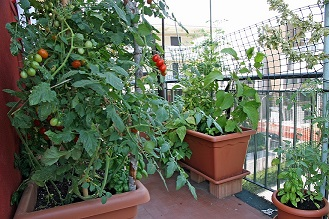

Urban farming is a growing trend, especially those focused on growing food. Whether the purpose of your efforts is to grow healthy food, grow affordable food, increase your self sufficiency, or even just because it is a rewarding and relaxing hobby, the following tips support all successful city farming efforts.
- Make city farmer friends in your area. Every climate and growing season is different. Learning what specific herbs or vegetables work well in your area is essential to success.
- Start small. Pick a couple of things that are easy and reliable as starters.
- Use good soil. Healthy plants cannot grow without it. You may need to add compost, nitrogen, or phosphorus. Again, the veterans in your area can help you develop good soil.
- Plants need sunlight. Generally vegetables can use as much sunlight as possible, but some leafy greens will do well in shaded areas too.
- Plants need water. It's hard to overwater vegetables, but each plant tolerates variations in moisture differently. Generally, a little water often is your best bet.
- Keep the weeds out. Weeds waste valuable space, moisture and nutrients. Weeding your garden also gives you the chance to study your crop and make adjustments.